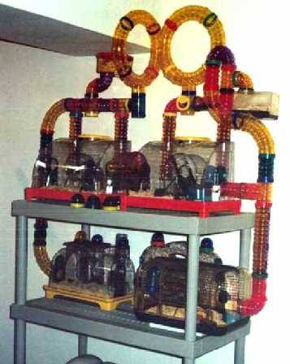

[ home | research
| personal | resume
| links ]
The MICE manual
or
"Bluff your way into Cloudy modeling"

Maybe recipe book is a better description than manual. Nevertheless
the MICE manual offers lots of
examples of what you can do with the MICE software package.
If you encounter any mistake or omission, please report it to
me.